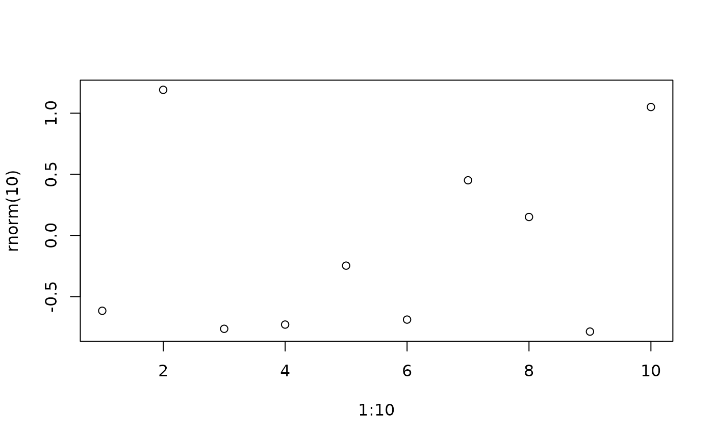

Get specific key values from '...' without
evaluating the rest of arguments.
get_dots(..name, ..default = NULL, ...)
Arguments
| ..name | character name of the argument |
|---|---|
| ..default | R object to return if argument not found |
| ... | dots that contains argument |
Details
One could use list(...)[[name]] to extract any keys
from the dots. However, such way reduces code readability. If
some arguments have not evaluated, list(...) will
force evaluating them. Normally it's fine if
these expressions take little time to run, but if the
expression require time to run, get_dots avoids
unnecessary evaluations.
Examples
# ------------------------ Basic Usage --------------------------- plot2 <- function(...){ title = get_dots('main', 'There is no title', ...) plot(...) title } plot2(1:10)#> [1] "There is no title"plot2(1:10, main = 'Scatter Plot of 1:10')#> [1] "Scatter Plot of 1:10"# ------------------------ Comparisons ---------------------------- f1 <- function(...){ get_dots('x', ...) } f2 <- function(...){ list(...)[['x']] } delayedAssign('y', { cat('y is evaluated!') }) # y will not evaluate f1(x = 1, y = y)#> [1] 1# y gets evaluated f2(x = 1, y = y)#> y is evaluated!#> [1] 1# -------------------- Decorator example -------------------------- ret_range <- function(which_range = 'y'){ function(f){ function(...){ f(...) y_range <- range(get_dots(which_range, 0, ...)) y_range } } } plot_ret_yrange <- plot %D% ret_range('y') plot_ret_yrange(x = 1:10, y = rnorm(10))#> [1] -1.544977 1.895876